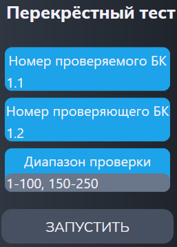

Перекрёстный тест МКР
Тест предназначен для поиска лишних подключений точек заданного диапазона БК к измерительным шинам.
Сначала появляется меню (см. рисунок 1):

Параметры
- "Номер проверяемого БК" и "Номер проверяющего БК" - адреса блоков коммутации;
- "Диапазон проверки" - диапазон проверяемых точек коммутации.
Алгоритм проверки
Подготовка:
- Коммутатор переводится в режим 4Ш;
- АЦП переводится в режим омметра на диапазоне 1кОм.
- АЦП подключается к шинам: +/A1, -/A2;
- Производится проверка объединения БК, участвующих в проверке.
- АЦП подключается к шинам: '+'/A1,A2 '-'/B1,B2.
Для каждой точки диапазона проверяемых БК осуществляются действия:
$DEV 1.1.1 на: A1
$DEV Все точки БК1.2 кроме 1.2.1 на A2
$DEV ПИТ: измерение д.быть Стаб=U Стаб=U
$DEV Все точки БК1.2 кроме 1.2.1 на B2
$DEV ПИТ: измерение д.быть Стаб=U Стаб=U
$DEV 1.1.1 на: НетШин (откл от A1)
$DEV 1.1.2 на: A1
$DEV Все точки БК1.2 кроме 1.2.2 на A2
$DEV ПИТ: измерение д.быть Стаб=U Стаб=U
$DEV Все точки БК1.2 кроме 1.2.2 на B2
$DEV ПИТ: измерение д.быть Стаб=U Стаб=U
$DEV 1.1.2 на: НетШин (откл от A1)
.........................................
Проверкой режима стабилизации ПИТ проверяется отсутствие лишних подключений. При обнаружении "брака" производится локализация лишних подключений.